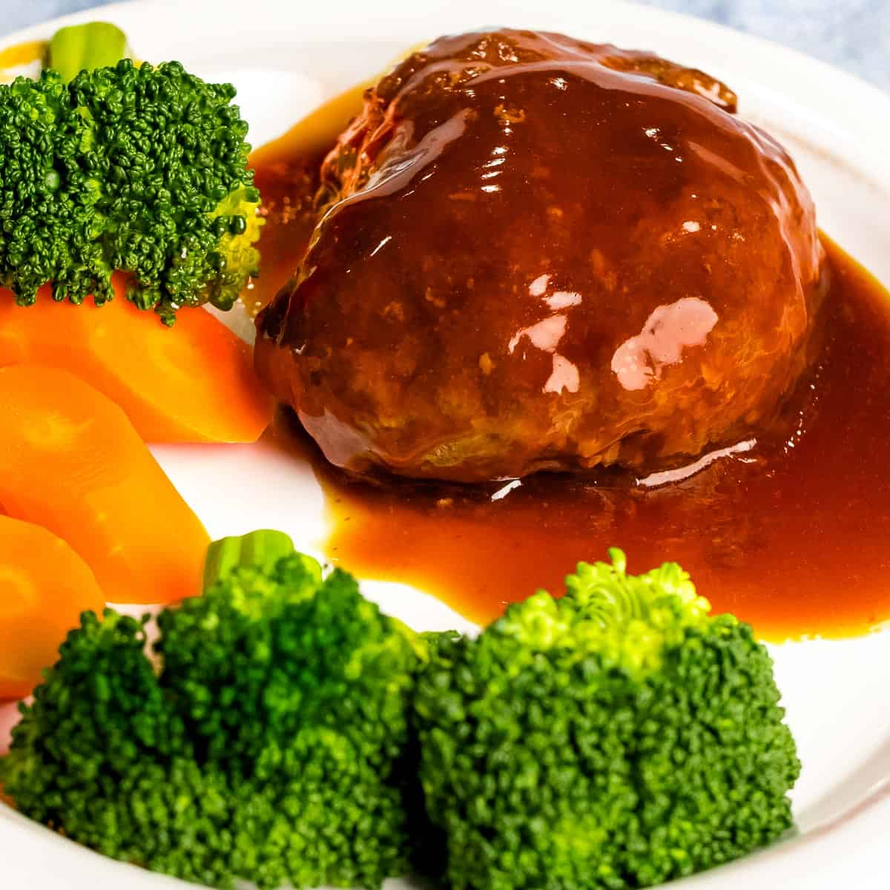

Japanese Hamburger Steak (Hambagu)

Description
Hambagu or Japanese Hamburger Steak has been around
since the 1800's. It is a yoshoku dish, or in other words,
a Japanese dish that has been influenced by Western cuisine.
This is a savory dish that many Japanese claim as a comfort food.
Let's explore this famous dish and bring a taste of Japanese comfort
to your friends and family!
Ingredients
- 1/2 Onion
- 1 Tbsp Neutral Flavored Oil
- 1 lb Ground Beef or 1 lb 50-50 Ground Beef and Ground Pork
- 1/2 tsp Kosher Salt
- Freshly Ground Black Pepper
- 1/2 tsp Nutmeg
- 1/3 cup Panko
- 2 Tbsp Milk
- 1 Large Egg
- 1 Tbsp Unsalted Butter
- 3 Tbsp Ketchup
- 3 Tbsp Tonkatsu Sauce
- 3 Tbsp Red Wine
- 3 Tbsp Water>
Steps
- Finely mince onion.
- Heat oil in pan.
- Sautee onion until soft.
- Put onion aside in bowl and allow to cool.
- Add ground meat, salt, pepper, nutmeg, panko, and egg.
- Mix ingredients with spatula or spoon.
- Switch to hand mixing and kneading until mixture is sticky and pale.
- Divide mixture into quarters.
- Scoop out one portion and toss from hand to hand. (It gets the air out of the patty so it maintains shape while being cooked!)
- Shape patty into an oval shape and place on a tray.
- Continue process with the rest of the portions.
- Refrigerate patties for 30 minutes so fat solidifies.
- Heat oil in pan over medium heat.
- Indent center of patties. (The centers will rise with heat).
- Cook on patties for 3 minutes on both sides.
- Add 3 Tbsp red wine and turn heat to low.
- Cover patties and steam in wine for 5-7 minutes.
- Uncover and poke patties with skewer. If juices run clear, the patties are finished cooking.
- Raise to medium heat and allow wine to burn off.
- We aren't done yet!
- Add unsalted butter, ketchup, tonkatsu sauce, 3 Tbsp red wint, and water to pan.
- Mix well and bring to a simmer over medium heat and allow red wine to evaporate.
- Sauce will thicken enough that you can draw an line across bottom of pan with a spatula or spoon.
- Remove from heat and drizzle over steak patties.
- Now for the most important part: Enjoy!
Main